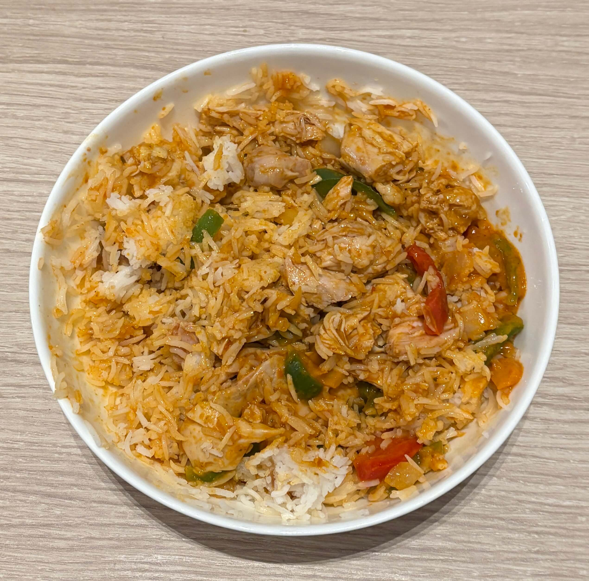

Home
Butter Chicken

Ingredients
- 30 oz butter chicken sauce
- Basmati rice
- Chopped Green/Red bell pepper
- Chopped onion
- 1lb boneless skinless chicken thighs/breasts
- 1tbsp olive oil
Steps
- Rinse the rice until the water is clear. Cook the rice using instructions on the rice cooker
- Cook the chicken in the oven at 450 degrees until the chicken reaches 165 degrees
- When the chicken is close to being fully cooked pour the oil in a skillet and cook the peppers and onions for 5 min
- Add the sauce to the skillet and cook until warm
- Plate the rice with the cut up chicken and pour the sauce over